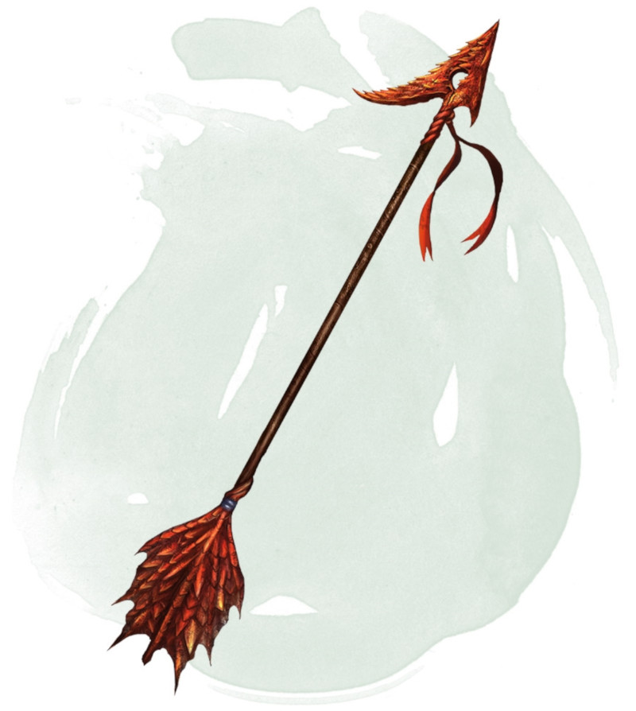

Flèche tueuse
[ Arrow of Slaying ]
Arme (flèche), très rare
Une flèche tueuse est une arme magique destinée à abattre un type de créature en particulier. Certaines sont plus spécifiques que d'autres ; par exemple, il existe des flèches tueuses de dragons et des flèches tueuses de dragons bleu. Si une créature appartenant au type, à la race ou au groupe associé à la flèche tueuse subit des dégâts de cette flèche, cette créature doit effectuer un jet de sauvegarde de Constitution DD 17, subissant 6d10 dégâts perforants supplémentaires en cas d'échec, ou la moitié de ces dégâts supplémentaires en cas de réussite.
Une fois qu'une flèche tueuse a infligé ses dégâts supplémentaires à une créature, elle devient une simple flèche non magique.
D'autres types de munition magique de ce type existent, comme les carreaux tueurs destinés aux arbalètes, mais les flèches sont les plus répandues.
Une fois qu'une flèche tueuse a infligé ses dégâts supplémentaires à une créature, elle devient une simple flèche non magique.
D'autres types de munition magique de ce type existent, comme les carreaux tueurs destinés aux arbalètes, mais les flèches sont les plus répandues.
Dungeon Master´s Guide (SRD)
